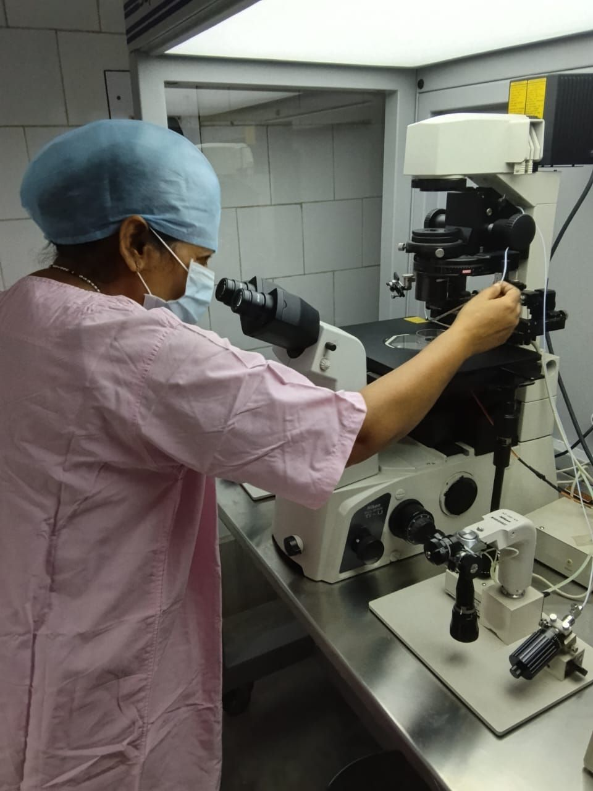
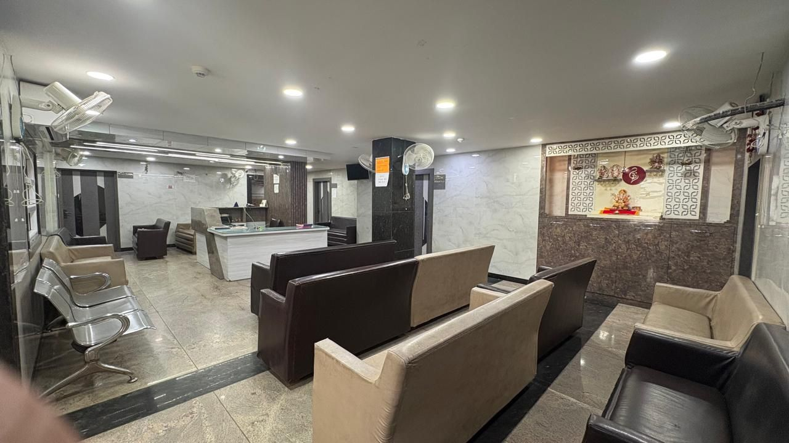
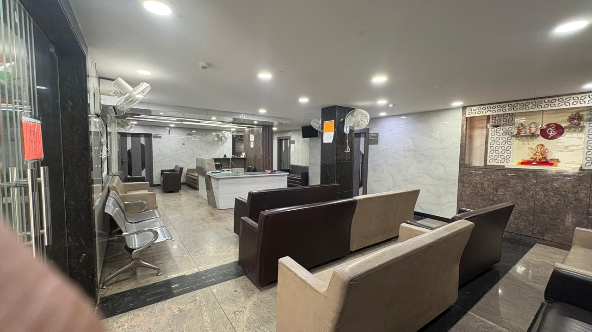

IUI
Intrauterine Insemination
Prepared sperm are placed directly in the uterus around ovulation. A gentle first step for many couples.
Fertility & Maternity Care · Saket Nagar, Kanpur
For over 15 years, Sushila General Hospital & Dr. C.L. Singh IVF Centre has helped families in Kanpur. We have our own embryology lab, a specialist in recurrent pregnancy failure, and complete maternity care in the same hospital.

About us
Sushila General Hospital & Dr. C.L. Singh IVF Centre brings fertility treatment and maternity care together in one place. Couples can start with a fertility evaluation, go through treatment in our own lab, and then have their pregnancy and delivery looked after by the same hospital.
Because the clinical team and the laboratory are in the same building, decisions can be made quickly and with the full picture in view. We take particular care with couples who have faced recurrent pregnancy failures. We also actively promote and support normal deliveries wherever it is safe for the mother and baby.
IUI, IVF, ICSI, donor programme, laparoscopy & hysteroscopy
High-risk pregnancy care, normal & painless delivery, newborn care
Meet our specialist
Infertility Specialist & Gynaecologic Endoscopist
“An infertility clinician with an insight into embryology.”
Our specialisation
When pregnancies have not continued, or earlier IVF cycles have not succeeded, the reason can sit in the clinic or in the laboratory, and often in both. Our specialist is trained in reproductive medicine and in embryology. That means your history, investigations and embryo development are reviewed together, so the next step is planned around your reasons and not a standard protocol.
Fertility services
From simpler first-line treatment to advanced lab procedures, each plan is chosen to suit the couple, not the other way round.
Intrauterine Insemination
Prepared sperm are placed directly in the uterus around ovulation. A gentle first step for many couples.
In Vitro Fertilisation
Eggs and sperm are brought together in our lab. The resulting embryos are cultured and transferred to the uterus.
Intracytoplasmic Sperm Injection
A single sperm is injected into each egg under a micromanipulator. This is often advised for male-factor infertility or previous fertilisation failure.
Through authorised agencies only
Donors come only from authorised agencies, with proper legal work-up and insured donors. This protects our patients from legal complications.
Diagnostic & operative
Keyhole surgery to examine and treat the tubes, ovaries and pelvis. Endometriosis, cysts and blockages are common reasons.
Diagnostic & operative
A fine camera through the cervix to look inside the uterus and correct problems such as polyps, septum or adhesions.
Obstetrics & maternity
A centre that promotes and supports normal deliveries, with the facilities to handle the unexpected safely.
Close monitoring for pregnancies after IVF, with twins, high blood pressure, diabetes or a difficult history.
We actively promote and support normal deliveries and avoid unnecessary intervention wherever it is safe.
A well-equipped labour room with pain-relief options to make delivery more comfortable.
In-house newborn intensive care, so babies who need extra support stay close to their mothers.
Inside our lab
Our embryology lab has clean-air workstations and an ICSI micromanipulation setup. Every procedure is done here, in our own hospital.
The hospital
As a full general hospital, we can arrange tests, scans and surgery on site, without sending you elsewhere.


What to expect
A detailed conversation about your history, previous treatment and goals, for both partners.
Scans, blood tests and semen analysis on site, plus laparoscopy or hysteroscopy where needed.
IUI, IVF or ICSI, planned around your reports and carried out in our own lab.
Antenatal care, high-risk monitoring and delivery, all in the same hospital.
Visit or call us
Sushila General Hospital & Dr. C.L. Singh IVF Centre
974, W-1, Saket Nagar,
Kanpur, Uttar Pradesh 208014
Near Goshala Chauraha, Deep Cinema Road, close to Sai Mandir and Kidwai Nagar